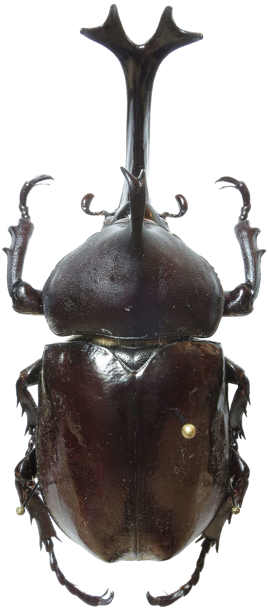
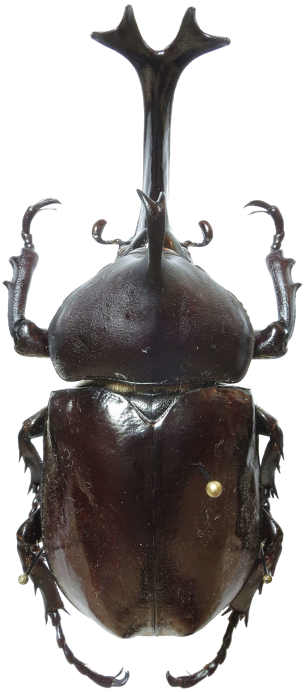

Aedan
Beetle
 The Beetle Aedan is built upon is a Japanese rhinoceros beetle (Allomyrina dichotoma) spanning approximately 25km in length. The habitable area on it's back is around 72km2.
 The Beetle Aedan is built upon is a Japanese rhinoceros beetle (Allomyrina dichotoma) spanning approximately 25km in length. The habitable area on it's back is around 72km2.